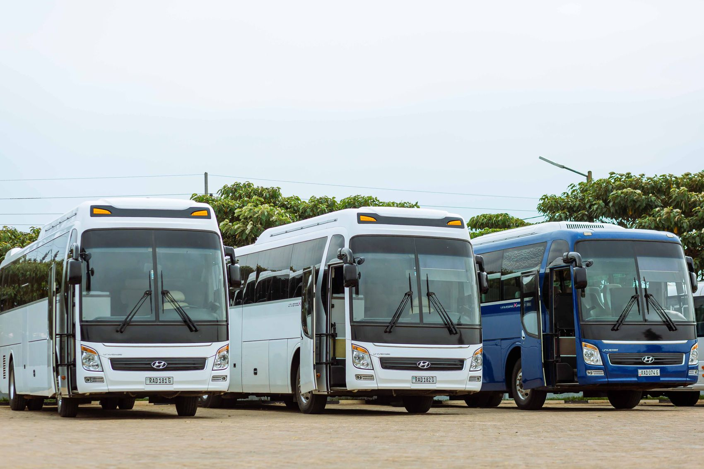
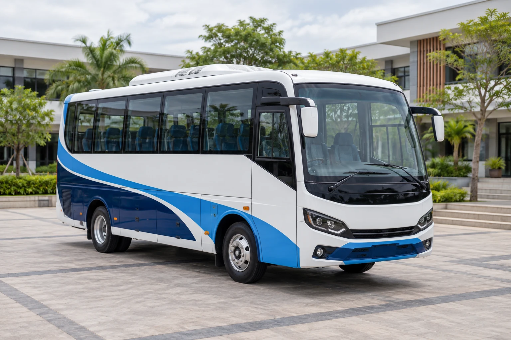
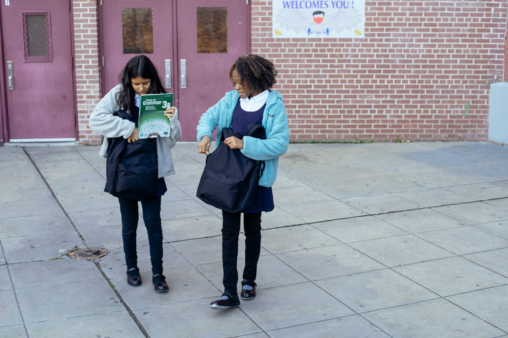
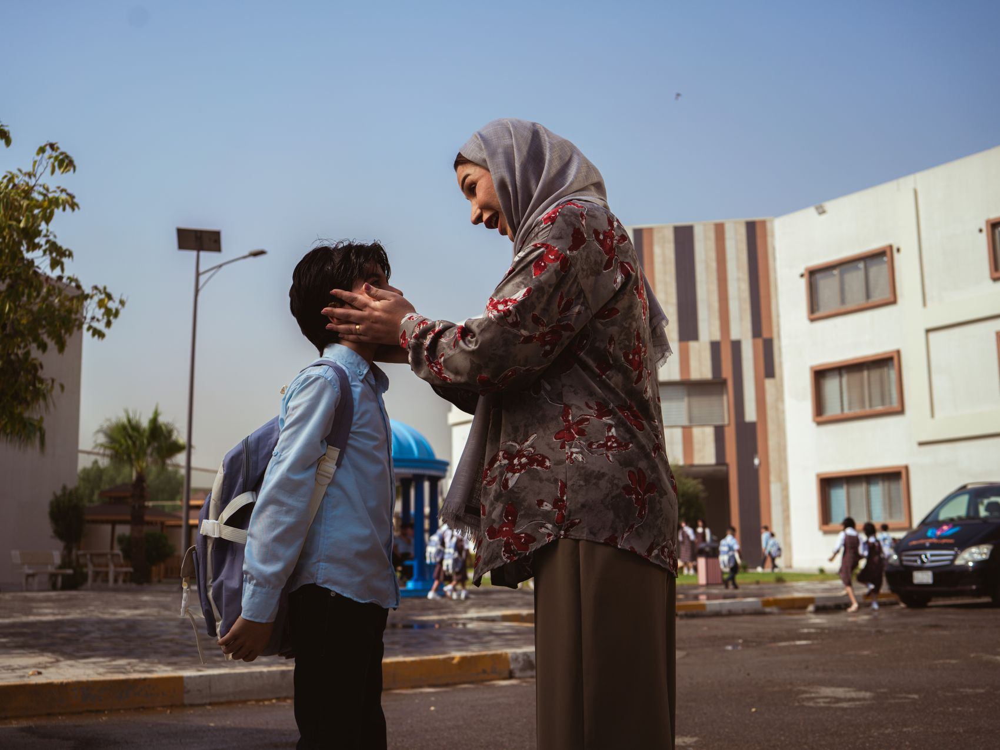
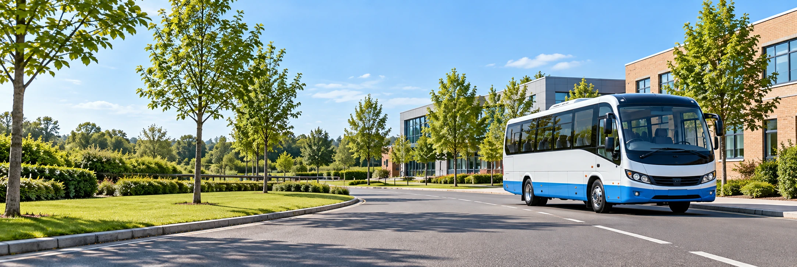

Daily school runs
A planned morning pickup and afternoon journey home, with an agreed route and familiar meeting points.
Explore this serviceSCHOOL TRANSPORT, THOUGHT THROUGH
Explore a considered approach to school travel—from the daily school run to the information that keeps parents connected.
Explore our servicesA sample service built around care and clarity.
FIND WHAT FITS YOUR SCHOOL DAY
Browse the sample service options, then explore the routes, fees and safety information that support them.

A planned morning pickup and afternoon journey home, with an agreed route and familiar meeting points.
Explore this service
When your family only needs one part of the school run, explore an illustrative one-way fee and journey arrangement.
Explore this serviceA simple place for route details, sample attendance, journey updates and transport fee records.
Explore this service
Explore proposed vehicle readiness, supervised boarding and agreed handover routines for a considered journey.
Explore this serviceA SHARED SCHOOL-DAY PLAN
Keep your pickup point, daily schedule and transport details easy to find—even on the busiest mornings.
Find your family’s routeKnow where to be and how the planned route reaches the school.
Explore sample journey, arrival and attendance updates.
See the sample fee plan and keep downloaded records organised.
FROM A QUESTION TO A CLEARER PLAN
Before the first school morning, make room for the conversations that help you choose well.
Start with the school name, neighbourhood and preferred journey type.
Look through stops and timings, and note the questions you’d like to ask.
Check fee estimates and the proposed safety and handover approach.
Explore how everyday route and fee information can stay organised.
Agree the pickup point, authorised collector and any travel support arrangements with your school and operator.
LET’S CLEAR A FEW THINGS UP
Every family’s needs are a little different. Start with the practical details.
Check whether the route and school schedules fit both children. A real operator would confirm seating and collection arrangements before enrolment.
The parent dashboard demonstrates the experience with a schematic journey simulation. A live service would need a verified GPS connection and secure student access.
Yes, the enquiry draft can be used to prepare a discussion about coverage, school schedules and coordination. This preview does not send an enquiry or create a service agreement.
Visit Fee Structure for sample distance-based plans and a monthly or term estimate. Final prices and terms would need confirmation from a real operator.

A GOOD SCHOOL RUN STARTS WITH A CONVERSATION
Share your school, neighbourhood and the questions on your mind.
Tell us about your journeyONE ROUTINE. MANY MOMENTS OF CARE.